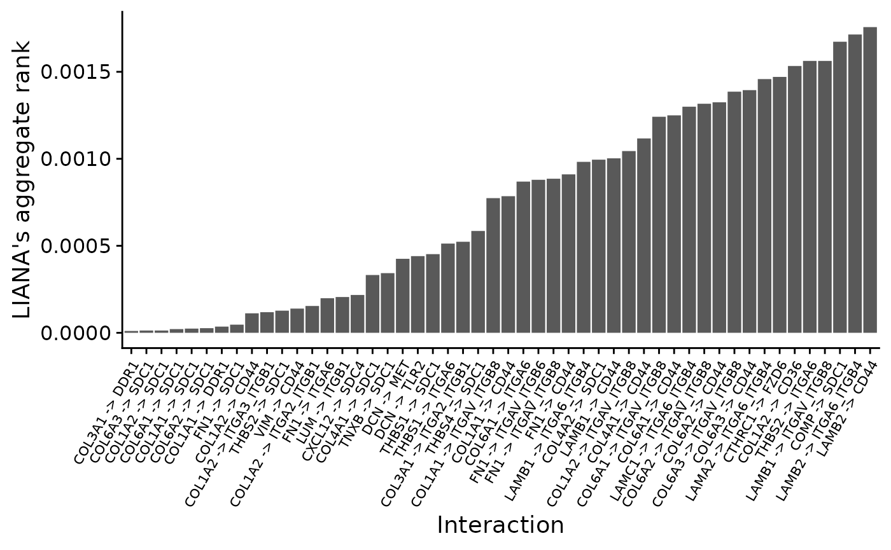
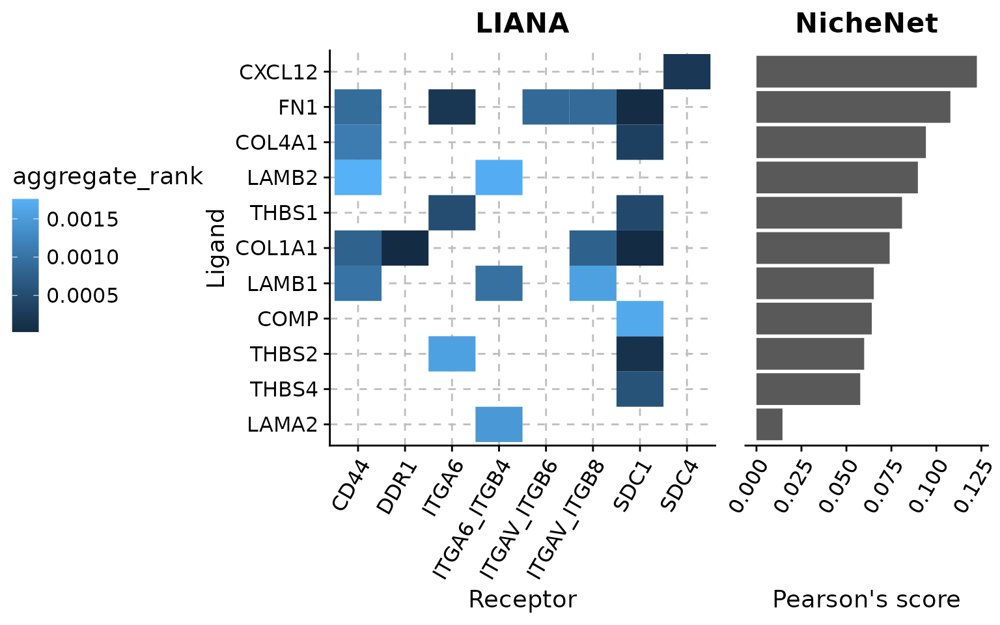

LIANA - NicheNet
Martin Garrido Rodriguez-Cordoba
2022-06-16
Source:vignettes/liana_nichenet.Rmd
liana_nichenet.RmdBefore you start
This vignette is an example of how to combine LIANA’s hypotheses with those produced by NicheNet. The biological results that are obtained here are highly dependent on the hypothesis in mind, which is described in NicheNet’s original article. Before you start, we strongly recommend to have a look to the NicheNet’s repository, as the data and the analyses that are run here were extracted from its vignettes. We acknowledge NicheNet’s authors for the extensive and reproducible documentation that they provide in this repository.
Background
LIANA (LIgand-receptor ANalysis frAmework) is a framework able to prioritize ligand-receptor interactions from single-cell transcriptomics using different resources and methods. It allows users to systematically generate hypotheses about which ligands from a given cell type is binding receptors on another. In contrast to LIANA, NicheNet aims to deepen in the intra-cellular mechanisms that connect a ligand with a set of transcriptional targets, making an extensive usage of prior knowledge from multiple sources. LIANA and NicheNet are not mutually exclusive, but in certain scenarios could be rather complementary, given that they aim to explore different aspects of inter- and intra-cellular communication.

Because of this, in this vignette, we show how to use LIANA in combination with NicheNet using the data and the biological scenario described in NicheNet’s vignette. Briefly, the biological question here is: Which ligands expressed by cancer-associated fibroblasts (CAFs) can induce a specific gene program in neighboring malignant cells? (Using data from Puram et al. 2017).
Load packages and data
We first install NicheNet and load required libraries
if(!require('ggpubr')) install.packages('ggpubr', quiet = TRUE, repos = "http://cran.us.r-project.org")
if(!require('ggrepel')) install.packages('ggrepel', quiet = TRUE, repos = "http://cran.us.r-project.org")
if(!require('cowplot')) install.packages('cowplot', quiet = TRUE, repos = "http://cran.us.r-project.org")
if(!require('remotes')) install.packages('remotes', quiet = TRUE, repos = "http://cran.us.r-project.org")
if(!require('nichenetr')) remotes::install_github("saeyslab/nichenetr", quiet = TRUE)
library(tidyverse)
library(liana)
library(nichenetr)
library(Seurat)
library(ggrepel)
library(cowplot)
options(timeout=300) # required to download expression data /w slow connectionThen, we load and prepare the single-cell data, NicheNet’s model weights, and the gene set of interest. The latest is composed by genes that are known to participate in the partial epithelial-mesenchymal transition (p-EMT) program, as defined in NicheNet’s vignette.
# single-cell expression matrix described in Puram et al. 2017
hnscc_expression <- readRDS(url("https://zenodo.org/record/3260758/files/hnscc_expression.rds"))
# model weights
ligand_target_matrix <- readRDS(url("https://zenodo.org/record/3260758/files/ligand_target_matrix.rds"))Furthermore, we restrict the single-cell data to the two cell types of interest for this example, which are the cancer associated fibroblasts (CAFs) and the tumor cells.
expression <- hnscc_expression$expression
sample_info <- hnscc_expression$sample_info
colnames(sample_info) <- make.names(colnames(sample_info))
# filter samples based on vignette's information and add cell type
tumors_remove <- c("HN10", "HN", "HN12", "HN13", "HN24", "HN7", "HN8", "HN23")
sample_info <- sample_info %>%
subset( !(tumor %in% tumors_remove) & Lymph.node == 0) %>%
# fix some cell type identity names
mutate(cell_type = ifelse(classified..as.cancer.cell == 1, "Tumor", non.cancer.cell.type)) %>%
subset(cell_type %in% c("Tumor", "CAF"))
# cell ID as rownames
rownames(sample_info) <- sample_info$cell
# subset expression to selected cells
expression <- expression[sample_info$cell, ]
# gene set of interest
geneset_oi <- read_tsv(url("https://zenodo.org/record/3260758/files/pemt_signature.txt"), col_types = cols(), col_names = "gene") %>%
pull(gene) %>%
.[. %in% rownames(ligand_target_matrix)]Run LIANA
In the first step, we run LIANA to systematically score all the ligand-receptor interactions between all the cell types included in the dataset. To do so, we first need to create a Seurat object from data:
# create seurat object
seurat_object <- Seurat::CreateAssayObject(counts = expm1(t(expression))) %>%
Seurat::CreateSeuratObject(., meta.data = sample_info) %>%
Seurat::NormalizeData()
# set cell identity to cell type
Idents(seurat_object) <- seurat_object@meta.data$cell_typeAnd then we can execute LIANA using default parameters. After LIANA execution, we employ the function liana_aggregate() to summarize the output of different methods and to obtain a single score for each interaction.
liana_results <- liana_wrap(seurat_object) %>%
liana_aggregate()By default, LIANA will score the ligand-receptor interactions in all the possible directions within the two cell types of interest. This includes: Autocrine signaling (e.g. CAFs -> CAFs), CAFs -> Tumor cells and Tumor cells -> CAFs. As we are only interested in the CAFs -> Tumor cell direction, we filter the results and visualize the top 50 interactions according to the consensus/aggregate rank across methods. The aggregate rank itself can be interpreted as the significance of preferential enrichment for the interactions.
# filter results to cell types of interest
caf_tumor_results <- liana_results %>%
subset(source == "CAF" & target == "Tumor") %>%
dplyr::rename(ligand=ligand.complex, receptor=receptor.complex)
# filter results to top N interactions
n <- 50
top_n_caf_tumor <- caf_tumor_results %>%
arrange(aggregate_rank) %>%
slice_head(n = n) %>%
mutate(id = fct_inorder(paste0(ligand, " -> ", receptor)))
# visualize median rank
top_n_caf_tumor %>%
ggplot(aes(y = aggregate_rank, x = id)) +
geom_bar(stat = "identity") +
xlab("Interaction") + ylab("LIANA's aggregate rank") +
theme_cowplot() +
theme(axis.text.x = element_text(size = 8, angle = 60, hjust = 1, vjust = 1))
Run NicheNet using LIANA’s ligands
The key aspect of combining LIANA with NicheNet is that we can use the ligands prioritized by LIANA as the set of potential ligands for NicheNet. Instead of evaluating all the expressed ligands for which the receptor is also expressed in the receiver cell type, we will only explore those that were prioritized by the methods included in LIANA. Hence, we select the ligands that form the interactions previously shown.
# get ligands and filter to those included in NicheNet's ligand-target matrix
ligands <- unique(top_n_caf_tumor$ligand)
ligands <- ligands[ligands %in% colnames(ligand_target_matrix)]
ligands## [1] "COL1A1" "FN1" "THBS2" "CXCL12" "THBS1" "COL4A1" "THBS4" "LAMB1"
## [9] "LAMA2" "COMP" "LAMB2" "HSPG2"Before running NicheNet, we also need to define a list of background genes. To do so, we employ the threshold defined in NicheNet’s vignette.
background_genes <- expression[sample_info$cell[sample_info$cell_type == "Tumor"], ] %>%
apply(2,function(x){10*(2**x - 1)}) %>%
apply(2,function(x){log2(mean(x) + 1)}) %>%
.[. >= 4] %>%
names()And execute NicheNet to predict the ligand activities using the pEMT gene set previously mentioned
nichenet_activities <- predict_ligand_activities(
geneset = geneset_oi,
background_expressed_genes = background_genes,
ligand_target_matrix = ligand_target_matrix, potential_ligands = ligands
)As a result, we obtain the NicheNet’s activity predictions for the ligands previously prioritized using LIANA. In a final step, we will visualize the ligand-receptor scores of LIANA and the ligand activity score of NicheNet in a single figure.
# prepare data for visualization
vis_liana_nichenet <- top_n_caf_tumor %>%
inner_join(nichenet_activities, by = c("ligand" = "test_ligand")) %>%
arrange(pearson) %>%
mutate(ligand = fct_inorder(ligand))
# prepare NicheNet figure
nichenet_scores_plot <- vis_liana_nichenet %>%
group_by(ligand) %>%
summarize(pearson = mean(pearson)) %>%
ggplot(aes(y = ligand, x = pearson)) +
geom_bar(stat = "identity") +
ggtitle("NicheNet") +
xlab("Pearson's score") +
theme_cowplot() +
theme(axis.text.y = element_blank(),
axis.ticks.y = element_blank(),
axis.title.y = element_blank(),
axis.line.y = element_line(color = "white"),
plot.title = element_text(hjust = 0.5),
axis.text.x = element_text(angle = 60, hjust = 1, vjust = 1))
# prepare LIANA figure
liana_receptor_heatmap <- vis_liana_nichenet %>%
ggplot(aes(y = ligand, x = receptor, fill = aggregate_rank)) +
geom_tile() +
theme_cowplot() +
ggtitle("LIANA") +
ylab("Ligand") + xlab("Receptor") +
theme(axis.text.x = element_text(angle = 60, hjust = 1, vjust = 1),
plot.title = element_text(hjust = 0.5),
panel.grid.major = element_line(colour = "gray", linetype = 2),
legend.position = "left")
# combine plots
plot_grid(liana_receptor_heatmap, nichenet_scores_plot,
align = "h", nrow = 1, rel_widths = c(0.8,0.3))
Conclusion
In this vignette, we exemplify how to use LIANA’s predictions as NicheNet’s input. Although both methods are complementary, there is one point that should not be forgotten: LIANA predicts ligand-receptor interaction pairs. However, NicheNet score for a given ligand comes from how likely is to reach a set of given targets from it. A ligand can have a great Pearson correlation score to regulate a given set of targets, but we do not actually know if it is mediated by the receptor that we predicted using LIANA. Given this, the combination of methods to predict cell-cell communication (like LIANA) with tools that are able to model intracellular signaling using prior knowledge (e.g. NicheNet) constitute a promising approach to deepen in the signaling mechanisms implicated in the biological process under study.
R Session information
## R version 4.2.0 (2022-04-22)
## Platform: x86_64-pc-linux-gnu (64-bit)
## Running under: Ubuntu 20.04.4 LTS
##
## Matrix products: default
## BLAS: /usr/lib/x86_64-linux-gnu/blas/libblas.so.3.9.0
## LAPACK: /usr/lib/x86_64-linux-gnu/lapack/liblapack.so.3.9.0
##
## locale:
## [1] LC_CTYPE=C.UTF-8 LC_NUMERIC=C LC_TIME=C.UTF-8
## [4] LC_COLLATE=C.UTF-8 LC_MONETARY=C.UTF-8 LC_MESSAGES=C.UTF-8
## [7] LC_PAPER=C.UTF-8 LC_NAME=C LC_ADDRESS=C
## [10] LC_TELEPHONE=C LC_MEASUREMENT=C.UTF-8 LC_IDENTIFICATION=C
##
## attached base packages:
## [1] stats graphics grDevices utils datasets methods base
##
## other attached packages:
## [1] sp_1.5-0 SeuratObject_4.1.0 Seurat_4.1.1 liana_0.1.4
## [5] forcats_0.5.1 stringr_1.4.0 dplyr_1.0.9 purrr_0.3.4
## [9] readr_2.1.2 tidyr_1.2.0 tibble_3.1.7 tidyverse_1.3.1
## [13] nichenetr_1.1.0 remotes_2.4.2 cowplot_1.1.1 ggrepel_0.9.1
## [17] ggpubr_0.4.0 ggplot2_3.3.6 BiocStyle_2.24.0
##
## loaded via a namespace (and not attached):
## [1] rappdirs_0.3.3 scattermore_0.8
## [3] ModelMetrics_1.2.2.2 ragg_1.2.2
## [5] bit64_4.0.5 knitr_1.39
## [7] DelayedArray_0.22.0 irlba_2.3.5
## [9] data.table_1.14.2 rpart_4.1.16
## [11] hardhat_1.1.0 RCurl_1.98-1.7
## [13] doParallel_1.0.17 generics_0.1.2
## [15] ScaledMatrix_1.4.0 BiocGenerics_0.42.0
## [17] RANN_2.6.1 proxy_0.4-27
## [19] future_1.26.1 DiagrammeR_1.0.9
## [21] bit_4.0.4 tzdb_0.3.0
## [23] spatstat.data_2.2-0 xml2_1.3.3
## [25] lubridate_1.8.0 httpuv_1.6.5
## [27] SummarizedExperiment_1.26.1 assertthat_0.2.1
## [29] viridis_0.6.2 gower_1.0.0
## [31] xfun_0.31 hms_1.1.1
## [33] jquerylib_0.1.4 evaluate_0.15
## [35] promises_1.2.0.1 progress_1.2.2
## [37] fansi_1.0.3 caTools_1.18.2
## [39] dbplyr_2.2.0 readxl_1.4.0
## [41] igraph_1.3.2 DBI_1.1.2
## [43] htmlwidgets_1.5.4 spatstat.geom_2.4-0
## [45] stats4_4.2.0 ellipsis_0.3.2
## [47] backports_1.4.1 bookdown_0.27
## [49] sparseMatrixStats_1.8.0 deldir_1.0-6
## [51] MatrixGenerics_1.8.0 Biobase_2.56.0
## [53] vctrs_0.4.1 SingleCellExperiment_1.18.0
## [55] ROCR_1.0-11 abind_1.4-5
## [57] caret_6.0-92 cachem_1.0.6
## [59] withr_2.5.0 progressr_0.10.1
## [61] vroom_1.5.7 checkmate_2.1.0
## [63] sctransform_0.3.3 scran_1.24.0
## [65] prettyunits_1.1.1 fdrtool_1.2.17
## [67] goftest_1.2-3 cluster_2.1.3
## [69] lazyeval_0.2.2 crayon_1.5.1
## [71] labeling_0.4.2 edgeR_3.38.1
## [73] recipes_0.2.0 pkgconfig_2.0.3
## [75] GenomeInfoDb_1.32.2 vipor_0.4.5
## [77] nlme_3.1-158 nnet_7.3-17
## [79] rlang_1.0.2 globals_0.15.0
## [81] lifecycle_1.0.1 miniUI_0.1.1.1
## [83] rsvd_1.0.5 modelr_0.1.8
## [85] cellranger_1.1.0 randomForest_4.7-1.1
## [87] rprojroot_2.0.3 polyclip_1.10-0
## [89] matrixStats_0.62.0 lmtest_0.9-40
## [91] Matrix_1.4-1 carData_3.0-5
## [93] zoo_1.8-10 beeswarm_0.4.0
## [95] reprex_2.0.1 base64enc_0.1-3
## [97] ggridges_0.5.3 GlobalOptions_0.1.2
## [99] png_0.1-7 viridisLite_0.4.0
## [101] rjson_0.2.21 bitops_1.0-7
## [103] KernSmooth_2.23-20 visNetwork_2.1.0
## [105] pROC_1.18.0 DelayedMatrixStats_1.18.0
## [107] shape_1.4.6 parallelly_1.32.0
## [109] spatstat.random_2.2-0 jpeg_0.1-9
## [111] rstatix_0.7.0 S4Vectors_0.34.0
## [113] ggsignif_0.6.3 beachmat_2.12.0
## [115] scales_1.2.0 memoise_2.0.1
## [117] magrittr_2.0.3 plyr_1.8.7
## [119] ica_1.0-2 RobustRankAggreg_1.1
## [121] zlibbioc_1.42.0 compiler_4.2.0
## [123] dqrng_0.3.0 RColorBrewer_1.1-3
## [125] clue_0.3-61 fitdistrplus_1.1-8
## [127] cli_3.3.0 XVector_0.36.0
## [129] listenv_0.8.0 patchwork_1.1.1
## [131] pbapply_1.5-0 htmlTable_2.4.0
## [133] Formula_1.2-4 MASS_7.3-57
## [135] mgcv_1.8-40 tidyselect_1.1.2
## [137] stringi_1.7.6 textshaping_0.3.6
## [139] highr_0.9 yaml_2.3.5
## [141] locfit_1.5-9.5 BiocSingular_1.12.0
## [143] latticeExtra_0.6-29 grid_4.2.0
## [145] sass_0.4.1 tools_4.2.0
## [147] future.apply_1.9.0 parallel_4.2.0
## [149] circlize_0.4.15 rstudioapi_0.13
## [151] bluster_1.6.0 foreach_1.5.2
## [153] foreign_0.8-82 metapod_1.4.0
## [155] gridExtra_2.3 prodlim_2019.11.13
## [157] farver_2.1.0 Rtsne_0.16
## [159] digest_0.6.29 BiocManager_1.30.18
## [161] rgeos_0.5-9 shiny_1.7.1
## [163] lava_1.6.10 Rcpp_1.0.8.3
## [165] GenomicRanges_1.48.0 car_3.1-0
## [167] broom_0.8.0 scuttle_1.6.2
## [169] later_1.3.0 RcppAnnoy_0.0.19
## [171] httr_1.4.3 ComplexHeatmap_2.12.0
## [173] colorspace_2.0-3 rvest_1.0.2
## [175] fs_1.5.2 tensor_1.5
## [177] reticulate_1.25 IRanges_2.30.0
## [179] splines_4.2.0 statmod_1.4.36
## [181] uwot_0.1.11 OmnipathR_3.4.0
## [183] spatstat.utils_2.3-1 scater_1.24.0
## [185] pkgdown_2.0.4 plotly_4.10.0
## [187] systemfonts_1.0.4 xtable_1.8-4
## [189] jsonlite_1.8.0 timeDate_3043.102
## [191] ipred_0.9-13 R6_2.5.1
## [193] Hmisc_4.7-0 pillar_1.7.0
## [195] htmltools_0.5.2 mime_0.12
## [197] BiocParallel_1.30.3 glue_1.6.2
## [199] fastmap_1.1.0 BiocNeighbors_1.14.0
## [201] class_7.3-20 codetools_0.2-18
## [203] utf8_1.2.2 logger_0.2.2
## [205] lattice_0.20-45 bslib_0.3.1
## [207] spatstat.sparse_2.1-1 ggbeeswarm_0.6.0
## [209] curl_4.3.2 leiden_0.4.2
## [211] survival_3.3-1 limma_3.52.1
## [213] rmarkdown_2.14 desc_1.4.1
## [215] munsell_0.5.0 e1071_1.7-11
## [217] GetoptLong_1.0.5 GenomeInfoDbData_1.2.8
## [219] iterators_1.0.14 haven_2.5.0
## [221] reshape2_1.4.4 gtable_0.3.0
## [223] spatstat.core_2.4-4